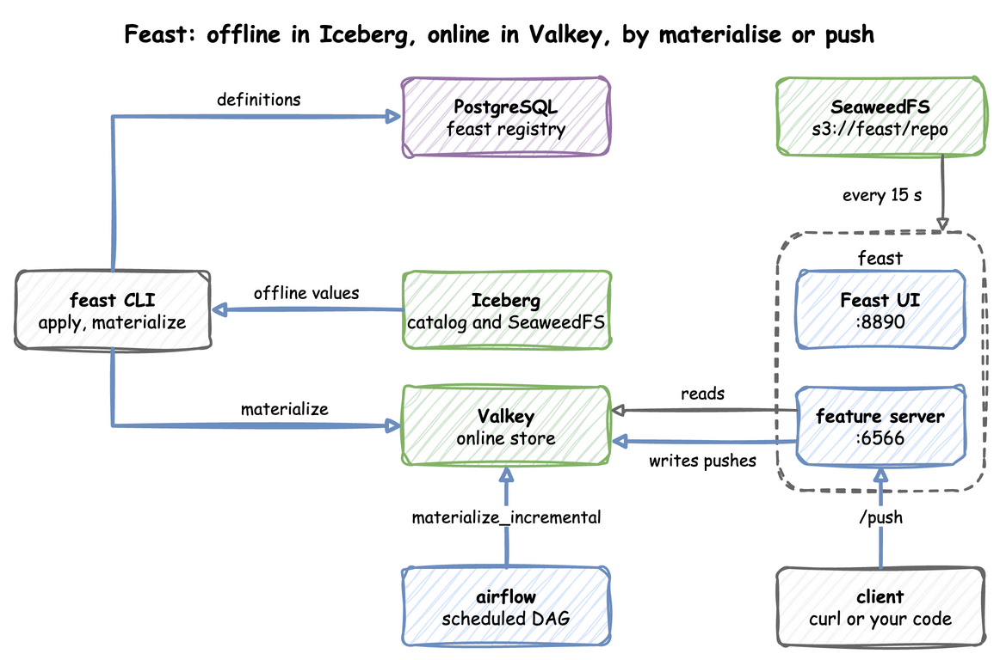
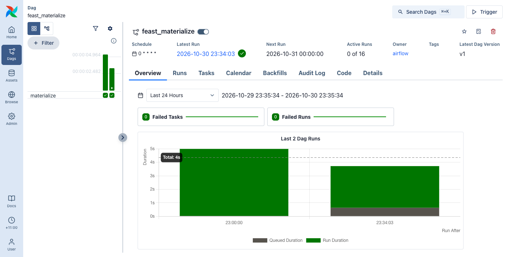
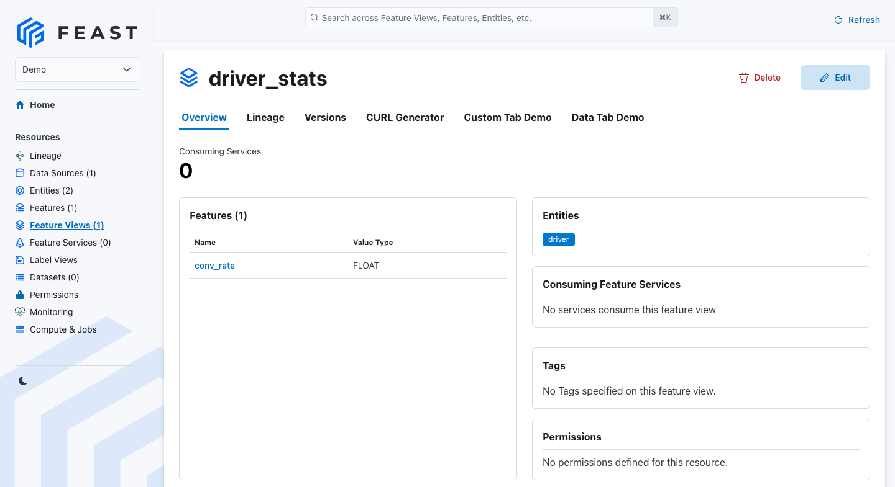

Feast with Iceberg
Feast is a feature store: it keeps the definitions of a model's input features and serves their values. The offline store holds the history of each feature, for training. The online store holds each entity's latest value, for serving a prediction quickly. Materialising copies values from the offline store to the online store. The feast profile runs the Feast UI and the online feature server. Feast stores no feature values of its own. Feature definitions live in a SQL registry in PostgreSQL, offline values come from Iceberg tables through the REST catalog, and online values are served from Valkey. You run feast apply and the other client commands from your own environment. The end-to-end tests run the steps below on every release.
This guide builds on Ingest into Iceberg, which writes Iceberg tables through the catalog, Flink SQL, whose SQL client the Flink push uses, and Airflow DAGs from S3, which uploads and runs a DAG. Follow the arrows from the feast CLI on the left: definitions go to the registry, and values go from Iceberg to Valkey. An Airflow DAG at the bottom centre also materialises into Valkey, on a schedule. A client at the bottom right can also push a value through the feature server into Valkey.

Start the profile and install the client, with the extras that read Iceberg, PostgreSQL and Valkey:
| docs/snippets/feast-iceberg/commands.sh:install | |
|---|---|
| Endpoint | Address |
|---|---|
| Feast UI | http://127.0.0.1:8890 |
| Feature server from the host | http://127.0.0.1:6566 |
Feature server inside the odctl network |
http://feast-serve:6566 |
| MCP endpoint from the host | http://127.0.0.1:6566/mcp |
| Registry | the feast database on PostgreSQL |
Point the Clients at the Stack
PyIceberg, which Feast uses to read Iceberg, takes its catalog settings from the environment. Run these in the shell where you run the next steps:
Create an Iceberg Table
Save this code as create_table.py and run it with python create_table.py. It creates demo.driver_stats if it does not exist and writes one hour-old row for each of two drivers:
Define the Feature Repository
A feature repository is a folder of configuration and definitions. Save this file as feature_repo/feature_store.yaml. It names the registry, the offline store and the online store:
| docs/snippets/feast-iceberg/feature_repo/feature_store.yaml | |
|---|---|
Save the definitions as feature_repo/definitions.py. They declare the entity driver and the feature view driver_stats over the Iceberg table:
Pass catalog_name="odctl", so that PyIceberg reads the PYICEBERG_CATALOG__ODCTL__* variables. Pass warehouse="", so that PyIceberg takes the warehouse from PYICEBERG_CATALOG__ODCTL__WAREHOUSE. The source has no endpoint, so the registry stores no catalog address, and PyIceberg takes it from PYICEBERG_CATALOG__ODCTL__URI. Each program that reads the registry therefore uses its own address: http://127.0.0.1:8181 in your shell and http://catalog:8181 in the Airflow container, set today in x-airflow-common of .odctl/compose-orch.yml, where an edit can change it. The entity names its value_type, so that apply need not read the table to find the type of driver_id.
Register and Materialise
Run these from the folder that holds feature_repo. apply writes the definitions to the registry, and materialize-incremental copies the latest values into Valkey. --skip-source-validation stops apply from checking the Iceberg source with Feast's own catalog client, which would need the catalog address that the source leaves out:
| docs/snippets/feast-iceberg/commands.sh:apply-materialize | |
|---|---|
apply prints Applying changes for project demo and Deploying infrastructure for driver_stats, and materialize-incremental names the feature view and the time range it copied.
On a Schedule
The DAG uses the table and the feature view from the steps above, so run them first.
Materialising by hand copies only the values that exist at that moment. An Airflow DAG can run materialize_incremental on a schedule. That method is the one behind feast materialize-incremental. It copies the rows whose event_timestamp falls between the end of the previous materialisation and end_date. A row written later with an older timestamp is therefore not copied.
The airflow image already has the Feast client, so the DAG installs nothing. It builds the feature store in code from three settings:
- the registry address in
FEAST_REGISTRY, which the Airflow container sets; - the DuckDB offline store;
- the Valkey online store at the container address
valkey:6379.
Save it as feast_materialize.py:
schedule="@hourly" runs the DAG at the start of each hour. catchup=False skips the hours missed while Airflow was stopped, because one incremental run covers them. Start Airflow beside Feast:
| docs/snippets/feast-iceberg/commands.sh:up-airflow | |
|---|---|
Copy the DAG into the Airflow container and upload it to s3://airflow/dags, as Airflow DAGs from S3 does:
| docs/snippets/feast-iceberg/commands.sh:dag-upload | |
|---|---|
Airflow reads the bucket every 15 seconds, so the DAG appears in its list a short time after the upload. To give the next run a value to copy, save this code as append.py and run it with python append.py in the shell where you set the catalog variables. It appends the value 0.6 for driver 1001, with the current time, to the Iceberg table:
Then unpause the DAG and trigger a run. Repeat the first command until it prints the DAG's line. Before that, unpause prints No paused DAGs were found and changes nothing, and trigger and list-runs fail. Unpausing also starts one scheduled run, for the latest hour that has ended, so the last command can list two runs:
| docs/snippets/feast-iceberg/commands.sh:dag-run | |
|---|---|
Run the last command again until each run shows success. Run the read from Read the Features below. After the DAG run it prints {'driver_id': [1001, 1002], 'conv_rate': [0.6000000238418579, 0.75]}, because the DAG copied 0.6, which is a 32-bit float, into Valkey.

Read the Features
FeatureStore(repo_path="feature_repo").get_historical_features(...) takes a point-in-time join from Iceberg through DuckDB, for training. This reads the materialised values from Valkey instead, as a model server would:
| docs/snippets/feast-iceberg/steps.py:read | |
|---|---|
It prints {'driver_id': [1001, 1002], 'conv_rate': [0.5, 0.75]}. Driver 1001 reads 0.6000000238418579 instead if you ran the DAG in On a Schedule.
Serve from the Stack
The UI at http://127.0.0.1:8890 and the online feature server at http://127.0.0.1:6566 load their repository from s3://feast/repo. To serve your features, upload the repository there with container addresses in its feature_store.yaml: postgres:5432 and valkey:6379. The definitions need no change, because the services take the catalog address from PYICEBERG_CATALOG__ODCTL__URI, which is http://catalog:8181 in x-feast-env of .odctl/compose-mlops.yml today. The services check that prefix every 15 seconds and restart Feast when it changes. The interval is set today by time.sleep(15) in x-feast-repo-sync in .odctl/compose-mlops.yml. Two other profiles also read their code from a bucket; How It Works compares the three.
Once the repository is uploaded, the UI lists the project and its feature views:

Push Features
A push source lets a client write a feature value straight to the online store through the feature server's /push endpoint, instead of materialising it. A client can be curl, a Flink SQL job, or a small Python process that reads Kafka and calls FeatureStore.push with PushMode.ONLINE. That mode writes to the online store only, as "to": "online" does over HTTP. Keep Messages Longer says how long Kafka keeps a stream for such a process to replay.
The slower route writes the stream to Iceberg with Flink and runs feast materialize-incremental on a schedule, as On a Schedule shows. A value then reaches the online store only after the next run.
Feast needs a push source before it accepts a push. The feature server serves the project that its own feature_store.yaml names, odctl. You therefore apply the definitions from inside the feast-serve container. Save these definitions as push_definitions.py. They declare the push source driver_push and the feature view driver_pushed:
Copy the definitions into the Feast container and apply them. --skip-source-validation stops Feast from looking for the file behind the batch source:
| docs/snippets/feast-iceberg/commands.sh:push-apply | |
|---|---|
apply prints Applying changes for project odctl and Deploying infrastructure for driver_pushed.
Over HTTP
This sends the value 0.7 for driver 1001 to /push. The body names the push source and holds df, a table of columns in which each field is an array, and "to": "online" writes to the online store only:
It prints 200. Feast caches its registry for up to a minute after apply, and allow_registry_cache set to false makes the push read the registry again, so it works at once. The timestamp must be new: a push with the same event_timestamp as the stored value does not replace it. Read the value back from the feature server:
| docs/snippets/feast-iceberg/commands.sh:push-read | |
|---|---|
The answer holds 0.699999988079071 for conv_rate, which is 0.7 as a 32-bit float. The read also uses the cached registry, so right after apply it can answer that the feature view does not exist. Run it again after a minute.
From Flink SQL
Flink's HTTP connector sends rows to a URL, so a Flink SQL job can push each value it computes. Start Flink beside Feast:
| docs/snippets/feast-iceberg/commands.sh:up | |
|---|---|
Open the SQL client:
| docs/snippets/feast-iceberg/commands.sh:sql-client | |
|---|---|
Then run these statements, which push the value 0.9 for driver 1001:
The connector is http-async-sink. Each setting of the table has a reason:
http.sink.writer.request.modeissingle, one request for each row, because Feast's/pushtakes one JSON object and the connector's default sends a batch as one array.http.sink.header.Content-Typesets the header, because the sink sends none and Feast answers 422 without it.- The column names are the field names of the request body, and each field of
dfholds an array, as under Over HTTP. allow_registry_cacheisFALSEso that the push reads the registry again, as under Over HTTP.- The statement uses
CURRENT_TIMESTAMPso that the timestamp is newer than the one the HTTP push stored.
The Flink job finishes and prints Complete execution of the SQL update statement. whether or not Feast accepts the request. A rejected request shows only in the TaskManager log, as Http Sink failed to write. Run the read from Over HTTP again to check the push. The answer now holds 0.8999999761581421 for conv_rate, which is 0.9 as a 32-bit float.
Connect an MCP Client
MCP, the Model Context Protocol, lets an AI agent discover and call the tools of a server. feast-serve serves an MCP endpoint at http://127.0.0.1:6566/mcp, and each route of the feature server is a tool. The bundled repository sets mcp_transport: http, which is Streamable HTTP: the client sends each request as an HTTP POST to the one /mcp address. The MCP specification of 2025-03-26 put it in place of HTTP with server-sent events. odctl does not install an MCP client, so install the Python one in your environment:
| docs/snippets/feast-iceberg/commands.sh:mcp-install | |
|---|---|
Save this code as mcp_client.py and run it with python mcp_client.py. It lists the tools, then calls the tool for /get-online-features to read driver_pushed:conv_rate, the value pushed above. Run Push Features first: without driver_pushed, the call fails and the script prints Feast's error, which names the missing feature view.
It prints the name of each tool, such as push_push_post, which is the route function, its path and its HTTP method, and then the value as [0.8999999761581421]. It prints [0.699999988079071] if you pushed over HTTP only.
From Another Container
Inside the odctl network, the feature server is http://feast-serve:6566. A repository for the services uses postgres:5432 for the registry and valkey:6379 for the online store, and its Iceberg source names no address.
Runnable Example
Save this file as example.sh and run it with bash example.sh in the folder that holds your .odctl workspace, in an environment with the Feast and MCP clients installed as above. It writes the repository files into feature_repo in that folder, and appends two rows to demo.driver_stats on each run:
| docs/snippets/feast-iceberg/example.sh | |
|---|---|
1 2 3 4 5 6 7 8 9 10 11 12 13 14 15 16 17 18 19 20 21 22 23 24 25 26 27 28 29 30 31 32 33 34 35 36 37 38 39 40 41 42 43 44 45 46 47 48 49 50 51 52 53 54 55 56 57 58 59 60 61 62 63 64 65 66 67 68 69 70 71 72 73 74 75 76 77 78 79 80 81 82 83 84 85 86 87 88 89 90 91 92 93 94 95 96 97 98 99 100 101 102 103 104 105 106 107 108 109 110 111 112 113 114 115 116 117 118 119 120 121 122 123 124 125 126 127 128 129 130 131 132 133 134 135 136 137 138 139 140 141 142 143 144 145 146 147 148 149 150 151 152 153 154 155 156 157 158 159 160 161 162 163 164 165 166 167 168 169 170 171 172 173 174 | |
It prints {'driver_id': [1001, 1002], 'conv_rate': [0.5, 0.75]}, the status 200 of the HTTP push and the feature server's answer with 0.8999999761581421. Then it prints the name of each MCP tool and the value [0.8999999761581421]. Driver 1001 reads 0.6000000238418579 in the first value instead if you ran the DAG in On a Schedule.